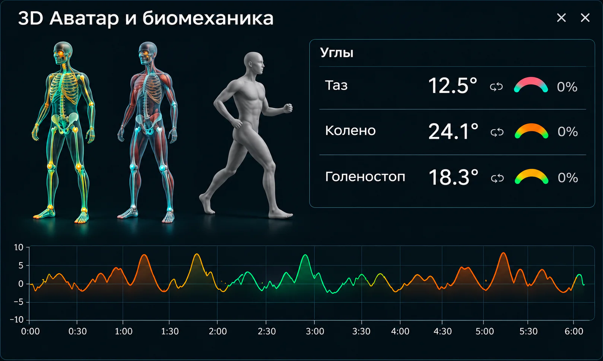
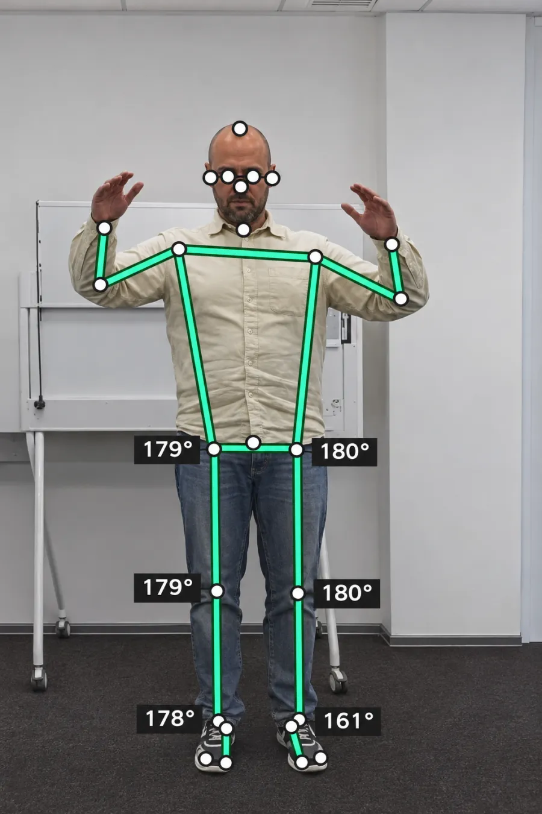
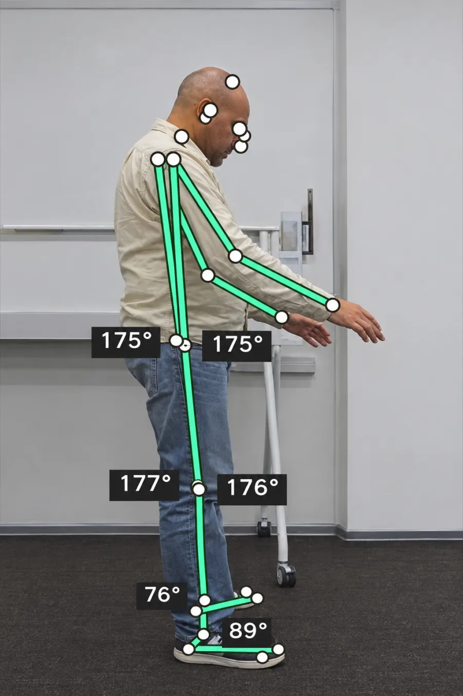
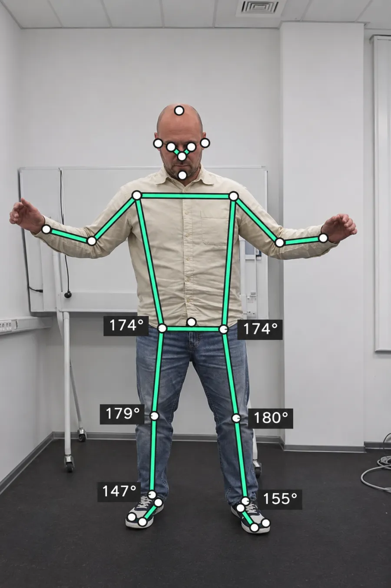
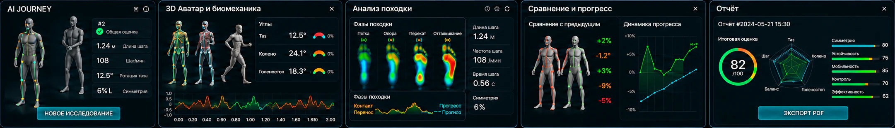
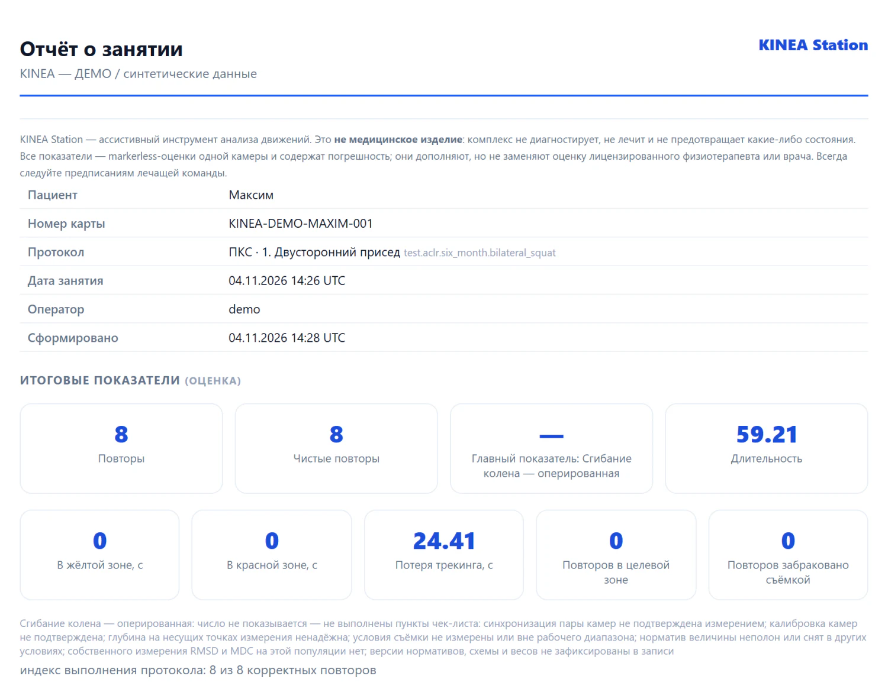

Анализ движения и реабилитация
Реабилитация в стационаре и на дому
Kinea анализирует движение без датчиков и маркеров на теле. Для восстановления после травм, операций и заболеваний.
Сгибание колена
Повтор
3 из 8
оперированная ногацелевая зона
- 0датчиков и маркеров на теле
- 2ракурса: спереди и сбоку
- 3Dуглы суставов в реальном времени
- Офлайнобработка на устройстве, без интернета
О продукте
Kinea для анализа движения и реабилитации
Измеряет движение пациента в стационаре и дома после выписки. Передаёт врачу понятный отчёт для продолжения восстановления.
Задачи продукта
- Оценка движения и функциональных возможностей
- Контроль техники упражнений
- Восстановление после травм и операций
- Наблюдение за динамикой после выписки
- Отчёт для врача и продолжение занятий дома
Принцип работы
Умные камеры вместо датчиков на теле
Фронтальная и боковая камеры глубины измеряют расстояние до точек сцены. Это даёт данные для оценки движения и углов суставов в 3D.
Пациент встаёт перед камерами и занимается. Маркеры, датчики и специальный костюм не нужны.
Обработка на рабочей станции Kinea. Видео остаётся на устройстве.

- Скелет и углы в реальном времени
- Два ракурса: спереди и сбоку
- Подсказки голосом и на экране
- Работа без интернета
В работе
Как это выглядит в работе
Скелет и углы строятся автоматически во время упражнения.



Кадры: иллюстративная реконструкция экрана Kinea.
Kinea в движении
Демонстрация отслеживания движений и углов суставов.
Путь пациента
Один инструмент на всём пути пациента
- 01
Входная оценка
Исходные амплитуды, функциональные тесты и анкеты.
- 02
Стационар
Программа врача, счёт повторов, контроль техники и опасных поз.
- 03
Дневной блок
Динамика от занятия к занятию.
- 04
Дом
После выписки та же программа в домашнем режиме Kinea.
- 05
Местный врач
Отчёт и план продолжения восстановления.

Направления
Для каких пациентов
Работаем сейчас
- После операций на коленном суставе, включая восстановление связок
- После операций на плечевом суставе
- Спортивные травмы: возврат в спорт
- Анализ походки
Развиваем
- Эндопротезирование коленного и тазобедренного суставов
- Экзопротезирование конечностей
- Восстановление после инсульта
- Спинальные травмы
- После инфаркта: двигательная нагрузка и пульс с подключённого датчика
- Переломы и последствия ДТП: восстановление в стационаре и дома
- Восстановление после ранений
- Функциональные тесты
- встать-сесть
- ходьба
- баланс
Программа занятий
Индивидуальная программа реабилитации
Как строится программа
- 01
Врач задаёт цели
Исходная оценка движения, боли и функциональных ограничений.
- 02
Настраивает нагрузку
Упражнения, допустимая амплитуда, повторы и интервалы отдыха.
- 03
Корректирует программу
Изменение параметров по динамике занятий и состоянию пациента.
Что это даёт
Учитывает возможности пациента
Параметры занятий соответствуют целям и этапу восстановления.
Помогает выполнять назначения
Подсказки и счёт повторов поддерживают выполнение программы.
Сохраняет историю занятий
Динамика и отчёты помогают врачу обсуждать и менять план занятий.
Программу назначает и изменяет врач.
Для врача
Что получает врач
Измерения и динамика
- Измерения
- Амплитуда, повторы, качество выполнения. Сравнение «старт ↔ сейчас» по пациенту.
- Тесты
- Встать-сесть за 30 с, «встань и иди», стойка на одной ноге, скорость ходьбы.
- Флаги внимания
- Кому требуется больше времени специалиста.
- Карта
- Назначения с подписью врача, анкеты, дневник боли, SOAP-заметки.
- Экспорт
- Для медицинской информационной системы.PDF-отчётCSVFHIR

Больше времени на пациента, меньше ручных замеров
Данные
Данные пациента остаются на устройстве
Локально
Вся обработка на приборе. Работа без интернета.
Приватно
Видео не покидает устройство. Наружу уходят только числа.
Под контролем
Локальный сервер, без публичного облака.
На устройстве Kinea
Коротко
Kinea в реабилитационной практике
Анализ движения
Скелет, углы суставов и качество выполнения упражнений
Программа занятий
Назначения врача, контроль техники и подсчёт повторов
Динамика восстановления
История занятий и отчёт для продолжения реабилитации
Kinea измеряет и показывает. Диагноз и лечение определяет врач.
Kinea
Анализ движения и реабилитация в стационаре и на дому
- Контакты
- Скоро появятся на этой странице